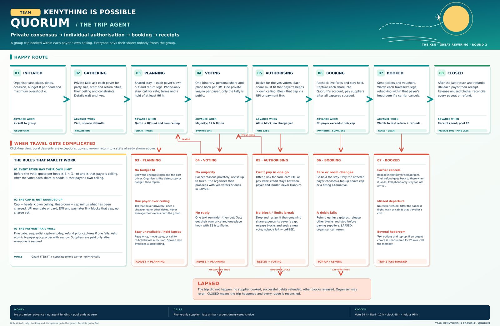

Everything a software developer needs to build the Round 3 simulation: what the product is, what The Ken asked for, what exists in the repo, what to build tonight, and how the Pine Labs integration works.
github.com/aabhasamol/nobody-fronts, branch claude/vibrant-albattani-sq7g81. Python 3.11, FastAPI, pydantic. Run pip install -r requirements.txt, then python -m pytest -q (57 tests pass) and ./run.sh (demo UI at localhost:8000).
Aabhas, Aditi, Sayan (IIM Calcutta). Opening: Planning the trip.
Built on 4 Oct in sim/: the Claude agent loop, system prompt, curtain console, Gnani and Pine Labs tools, decision-log export. Run guide: sim/README.md and §12.
The problem. When a group of friends plans a trip (a wedding in Goa, a leisure weekend), one person, the organiser, usually ends up booking everything on their own card and chasing everyone for money. People say "yes" in the group chat to be polite, then drop out once money is due.
The product. Quorum is a trip agent that lives in the group's WhatsApp. It separates the social decision (a private yes/no vote) from the money decision (each payer authorises their own capped amount). It books only once everyone who is in has authorised. Nobody fronts money for anyone else: not the organiser, and not Quorum.
Book an approved group trip for every participating payer, including travel from their own city, without requiring any one member to advance another member's share.
Quorum may price, book and rebook a previously approved trip within each payer's own authorised cap and the agreed itinerary. Anything outside that, such as a different hotel, a different date or a cost above someone's cap, goes back to the affected people.
| Term | Meaning |
|---|---|
| Organiser | Adds Quorum to the group and gives destination, dates, occasion, a rough budget B per head and a maximum overshoot o (e.g. ₹20,000 and 10%). Never pays for anyone. |
| Payer / member | A person in the group with a phone and a way to pay. A payer may cover several travellers (their party, or heads). |
| Ceiling | A payer's own per-head maximum, given privately. If they stay silent, it defaults to the organiser's limit B × (1+o). |
| Share | What one payer owes: (their own travel legs + their split of the shared stay + pre-booked essentials) × heads. |
| Cap | heads × own ceiling, not rounded up. This is what the payer blocks after the vote. Headroom = cap − amount charged. |
| Block | A UPI mandate, card pre-authorisation or payment-link payment for the cap. Nothing is charged until booking. |
| Pool | Quorum's merchant account at Pine Labs. Captures land here; suppliers are paid from here; it must end at ₹0. |
| Phone-only stay | A homestay or guesthouse with no online inventory. The agent calls it (via Gnani speech) for availability, rate, terms and a hold of at least 96 h. |
| P0 / P1 / P2 | P0 = a phone call (only three reasons are allowed); P1 = a text now; P2 = a text that can wait. |

The final flow from the Round 2 submission (also in docs/quorum-flow-final.webp and the interactive docs/quorum-trip-flow.html). The engine in app/engine.py implements exactly these eight states plus LAPSED.
1 Every payer has their own limit. Before the vote: each payer's quote per head ≤ B × (1+o) and ≤ their own ceiling. After the vote: each share ≤ heads × that payer's own ceiling. One payer's excess is never averaged onto the others, and the group never learns whose ceiling broke.
2 The cap is not rounded up. Cap = heads × own ceiling. Headroom = cap − charged. A UPI mandate, card hold or pay-later link blocks the cap; nothing is charged yet.
3 The payment-rail wall. Pine Labs has no all-or-nothing capture across N payers, so the agent captures payer by payer and refunds earlier captures if one fails. Suppliers are paid only after every capture succeeds.
| Window | Length |
|---|---|
| Gathering (private DMs) | 24 h; silence = defaults |
| Vote | 24 h; one text reminder at 12 h |
| Flip-in (no-voters can join) | 12 h |
| Block (authorise) | 48 h default; organiser sets it |
| Phone-only hold | ≥ 96 h (24 + 12 + 48 = 84 h, plus slack) |
| Disruption escalation | 20 min unanswered → call |
Source: Adhavan RK (The Ken), "You're shortlisted to Round 3" (30 Sep 2026) and "Round 3 submission is open" (1 Oct 2026). Paraphrased closely; quotes are verbatim.
The agent is an AI model (Claude or Gemini) "following a system prompt you write, and it makes every decision on its own". Wherever the model can connect to something directly (Gmail, WhatsApp, Google Sheets), connect it. Everything else is played by a team member "behind the curtain":
The curtain never helps the agent think. "If your agent needs someone to tell it what to do next, it isn't an agent yet."
| Path | What it is | Status |
|---|---|---|
app/engine.py | The state machine: INITIATED → … → CLOSED, every unhappy path, the P0 call rule, clocks. Deterministic Python. | done |
app/models.py | Trip, Member, Plan, Leg, Stay, Authorisation, instruments (UPI Reserve, UPI OTM, card hold, prepaid link, BNPL). | done |
app/messages.py | Every sentence the agent sends. Useful as tone reference for the system prompt. | done |
app/rails/mock.py | Offline mocks for voice, payments and logistics (fares, stays, activities). | done |
app/rails/gnani_speech.py, gnani.py | Real Gnani TTS + STT via api.vachana.ai; a supplier call run on recorded replies; budget cap on billable calls; key in app/keys.py. | works |
app/rails/pinelabs.py | Pine Labs adapter: token, payment link with pre-auth, status, capture, cancel, refund, offer discovery; payouts recorded as instructions. | unverified |
app/main.py, static/index.html | FastAPI + demo UI with group chat, DMs and rail log; buttons drive each member. | done |
demo.py, docs/demo_transcript.txt | Three terminal runs (wedding, leisure, payment wall). | done |
docs/round2-final.md | The submitted Round 2 answers. Read this first. | reference |
sim/agent.py, sim/system_prompt.md | Round 3: Claude tool-use loop (one event in, the model decides until done) and the rules R1–R26 it follows; operator console. | built |
sim/tools.py, sim/world.py, sim/curtain/templates.json | Round 3: tools (chat, Gnani, phone line, Pine Labs, Delhivery, fares, stays, calculators), curtain console with documented-response templates, sim clock, run log. | templates to verify |
sim/channels.py, sim/export.py | Round 3: console or Telegram channel; exports decisions.md, rail_calls.md, transcript.md. | built |
| # | Pending | Why it matters | Priority |
|---|---|---|---|
| 1 | LLM agent + system prompt + tool loop | The Ken requires the model to make every decision. Built in sim/; needs a rehearsal with a real API key. | built |
| 2 | Curtain console for Pine Labs, Delhivery and world events | A teammate answers each Pine Labs/Delhivery call with the documented response, on screen, and injects real-world inputs. Built; templates must be replaced with the docs' samples. | built |
| 3 | Endpoint verification | All Pine Labs paths and both Delhivery paths in sim/curtain/templates.json are unverified. A person with docs access must check them. | blocking |
| 4 | Real chat channel | Console works now; Telegram channel is built but needs a bot token and chat ids in sim/config.json. | config |
| 5 | Real sources for inputs | Fares, stay listings, flight status and the cancellation event are mock. Each must come from a real source (e.g. a teammate pastes a real fare from an airline/OTA site with a screenshot). | blocking |
| 6 | Move the trip dates | The simulation takes dates from the organiser's message (rehearsal uses 20–24 Nov 2026). The old engine demo still says 2–6 Oct; it isn't used in the recording. | done |
| 7 | Decision-log export | Every action tool carries a decision (rule id, trigger, state); sim/export.py writes the table. Built. | built |
| 8 | Landing page (Part 2 Q5) | Static page with a sign-up CTA, deployed with a public link. | high |
| 9 | Mockups of every touchpoint | WhatsApp group, each DM type, supplier call script, escalation call, Pine Labs hosted page, receipt. | high |
| 10 | Engine leftovers | Per-payer receipt at CLOSED (blocked · charged · refunded · released) not built; group post after a missed flight says "cancelled by the carrier" (wrong); UPI Reserve Pay is modelled up to ₹1 lakh but our own Round 2 text says its cap is ₹10,000. | later |
The Ken's test is whether the model makes every decision. So:
app/engine.py and §2.app/engine.py and compare. Where the model's decision differs from the engine's, fix the system prompt before recording.| Option | Setup | Fit |
|---|---|---|
| A. WhatsApp Cloud API test number | Meta developer app; test number messages up to 5 verified recipients; business-initiated messages need a template until each member messages first (24 h window). Bots cannot join existing WhatsApp groups. | Closest to the product, but the riskiest setup for tonight. Group posts would need a workaround. |
| B. Telegram bot | BotFather token in minutes; the bot can sit in a real group and DM each member. | Fastest real channel with a true group + DMs. Say in the submission that production is WhatsApp; mockups show WhatsApp. |
C. Our own web chat (static/index.html) | Already built. | Model connects directly to our app, but judges may see it as less real. Use only as fallback. |
Recommendation: B for the recording, with WhatsApp mockups for Q5. Optionally mirror the ledger to a Google Sheet (a direct connector The Ken names).
Defined in sim/tools.py as Anthropic Messages API tools; the loop is in sim/agent.py (model claude-opus-5-5, adaptive thinking with summaries shown, effort high, prompt caching, server-side refusal fallback). Every action tool takes a required decision object (decided, rule_id, trigger, state) that becomes one row of the decision log. Tools act and report facts; they never decide.
| Tool | What happens | Played by |
|---|---|---|
send_group, send_dm | Post to the group (kickoff, tally, booked, disruptions) or DM one member. | real channel (console or Telegram) |
log_decision | A decision with no other action (e.g. "wait for the deadline"). | log |
search_fares, search_stays | Curtain pastes what a real airline/OTA site or Google Maps shows now; keep screenshots. | curtain (real source) |
delhivery_geocode, delhivery_distance | Venue and stay coordinates; road distance and drive time. | curtain (documented response) |
gnani_tts | POST https://api.vachana.ai/api/v1/tts/inference; saves the WAV in the run folder. | Gnani (real) |
place_call | Plays the TTS audio; the operator gives the path of the callee's recorded reply, or "none" for no answer. Only P0 reasons accepted by schema. | curtain (phone line) |
gnani_stt | POST https://api.vachana.ai/stt/v3; Gnani's transcript returned verbatim. | Gnani (real) |
pinelabs_create_payment_link | Builds the documented body (cap in paisa, pre_auth, card/UPI/BNPL, expire_by). Token call happens automatically first. | curtain, or UAT with SIM_PINELABS=uat |
pinelabs_get_payment_link | Status, order id, method. (Or the operator plays the webhook: /webhook Name AUTHORIZED CARD.) | curtain / UAT |
pinelabs_capture, _cancel, _refund, _payout | Capture the share; release a block; refund on a failed group capture; pay a supplier from the pool. The operator console warns if a capture exceeds the authorised amount or a payout exceeds the pool. | curtain / UAT |
quote_plan, caps | Arithmetic only (same formulas as app/models.py, tested against the engine's numbers). | code |
sim/system_prompt.md holds the outcome, how the agent works, and rules R1–R26: channels and tone (R1–R2), gathering (R3–R5), planning (R6–R9), voting (R10–R13), authorising (R14–R16), booking (R17–R20), after booking (R21–R24), calls (R25) and facts (R26). build_system() appends day-one knowledge (group, roster, organiser, place hooks from app/lore.py). Each run saves the exact prompt as system_prompt.md in its run folder; submit that file.
Pine Labs Online (the "Plural" v2 APIs). UAT base https://pluraluat.v2.pinepg.in; developer keys from dashboardv2.pluralonline.com. In the simulation a teammate plays Pine Labs by pasting the documented response. Still build each real request body in code: it proves the integration and makes the switch to live UAT a config change (QUORUM_PAYMENTS=pinelabs).
app/rails/pinelabs.py.| # | When | Call | Purpose |
|---|---|---|---|
| 1 | Start of AUTHORISING | POST /api/auth/v1/token | OAuth client-credentials token (Bearer for every call below). |
| 2 | Per payer, after the vote | POST /api/pay/v1/paymentlink | Hosted link for the payer's cap (paisa), pre_auth on, card + UPI (+ BNPL if enabled), expire_by = block deadline. Link URL goes in the payer's DM. |
| 3 | Payer pays on the hosted page | Webhook to callback_url, or GET /api/pay/v1/paymentlink/{payment_link_id} | Status (e.g. authorised/blocked), the order_id behind it, and the method used (card, UPI…). |
| 4 | (Optional) EMI quote | POST /api/pay/v1/offers/discovery | EMI tenures for the cap, shown in the DM. |
| 5 | BOOKING, per payer | …/api/pay/v1/orders/{order_id}/capture (method: verify; repo uses POST) | Capture exactly the share (≤ cap). One capture per card hold or UPI OTM. |
| 6 | A capture fails | POST /api/pay/v1/refunds/{order_id} | Refund each earlier capture; then LAPSED. |
| 7 | Release unused blocks / dropouts | …/api/pay/v1/orders/{order_id}/cancel | Releases a hold or the uncaptured balance. |
| 8 | All captures succeeded | Payouts API (path: verify) | Pool → homestay and other suppliers (IMPS/NEFT/UPI to registered beneficiaries). |
POST {base}/api/pay/v1/paymentlink
Authorization: Bearer <access_token> Request-ID: <uuid> Request-Timestamp: <ISO-8601>
{
"amount": { "value": 4400000, "currency": "INR" }, // Aabhas: 2 heads x Rs 22,000 = Rs 44,000
"description": "Quorum: your share of the trip, blocked now, debited only when everyone is in",
"expire_by": "2026-10-07T20:00:00Z",
"allowed_payment_methods": ["CARD", "UPI", "BNPL"],
"pre_auth": "true",
"merchant_payment_link_reference": "quorum-plan_8c28-m_aabhas-3f9a1c",
"customer": { "first_name": "Aabhas", "last_name": "Amol", "mobile_number": "98300xxxxx",
"country_code": "91", "email_id": "...", "merchant_customer_reference": "quorum-m_aabhas" },
"callback_url": "https://<tunnel>/webhooks/pinelabs",
"merchant_metadata": { "source": "quorum", "plan": "plan_8c28", "member": "m_aabhas" }
}
{base}/api/pay/v1/orders/{order_id}/capture
{ "merchant_capture_reference": "cap-7c1e9a20b4",
"capture_amount": { "value": 3996000, "currency": "INR" } } // share Rs 39,960 <= cap Rs 44,000
Our key is a Vachana (Gnani's speech platform) key in app/keys.py, scoped to TTS and STT and capped by CallBudget (40 billable calls; override with GNANI_CALL_BUDGET). Free credits: ₹1,000 (Gnani email, 15 Sep).
| Verb | Endpoint (from app/rails/gnani_speech.py) | Body | Returns |
|---|---|---|---|
| Text to speech | POST https://api.vachana.ai/api/v1/tts/inference | JSON {text, voice, model, audio_config} | audio bytes |
| Speech to text | POST https://api.vachana.ai/stt/v3 | multipart {audio_file, language_code} | {success, transcript} |
The supplier call in the simulation. The agent decides to call the phone-only homestay (R4) and writes its question. TTS turns it into Hindi audio, which is played. A teammate playing the homestay owner records a real spoken reply (rooms, rate, refund terms, hold). STT transcribes it. The agent reads the fields from Gnani's exact transcript. Run python scripts/speech_demo.py to see the existing loop (≈ ₹2 per run). There is no outbound telephony; the phone line is a separate seam (Exotel/Twilio) and is not needed for the simulation.
Delhivery moves parcels; nothing in a group trip is a parcel. What Quorum uses is Delhivery Maps: geocoding the venue and the stays, and road distance / travel time (venue ↔ stay, airport ↔ stay). For a wedding, stays are ranked by distance to the venue and the arrival buffer must be real. Today Stay.km_to_venue is hand-written; there is no Delhivery adapter.
delhivery_distance tool. The harness shows the request built per Delhivery's Maps docs (geocode, then distance matrix / routing); the curtain pastes the documented response with real coordinates (e.g. from a maps lookup of Assagao and the homestay).| Partner | Endpoint (imagined) | What it does | Data the partner already holds |
|---|---|---|---|
| Pine Labs | POST /api/pay/v1/group-orders | One group order holding N independently approved payer authorisations to one deadline; captures all or none; releases all on failure; escrow until fulfilment. | Each payer's pre-auth / mandate status, the merchant's orders, settlement accounts. |
| Pine Labs | POST /api/settlements/v1/orders/{order_id}/disburse | Pay a supplier directly from a captured, not-yet-settled order, so booking needn't wait for settlement. | Captured order funds and the merchant's settlement ledger. |
| Delhivery | GET /maps/v1/access-check?lat=..&lng=..&vehicle=tempo_traveller | Can this vehicle reach this address's entrance? (Lane width, failed-access history.) | Years of delivery attempts per address and pincode with vehicle type and failure reasons. |
Scenario. Priya's wedding in Assagao, Goa, moved to a future date (suggested 20–24 Nov 2026). The cast from app/scenario.py: Sayan (organiser, Kolkata, ceiling ₹24k), Aabhas (Kolkata, pays for 2, ₹22k), Aditi (Bengaluru out, Mumbai back, ₹20k), Riya (Delhi, ₹23k), Karan (Mumbai, silent → ₹22k default). Budget ₹20,000/head, overshoot 10%. Real people play the members from their own phones. Real fares are pasted by the curtain from a real site at recording time; numbers will differ from the mock, which is fine.
Outcome to reach on camera: BOOKED: every payer's share captured, suppliers paid, tickets in DMs, "Booked" in the group. A disruption beat is optional if time remains.
| Time | Input arrives (source) | Agent does (connector) |
|---|---|---|
| 0:00 | Sayan's kickoff in the group (real chat) | Posts the kickoff; DMs each payer six questions with a default and deadline. |
| 0:30 | Four replies; Karan silent (real chat). Clock tick 24 h (curtain). | Acknowledges privately; applies Karan's defaults (R2). |
| 1:00 | Real fares and stays (curtain, screenshots); venue distance (curtain-played Delhivery) | Ranks stays by distance to venue; picks the phone-only homestay. |
| 1:20 | — | Gnani TTS of the supplier question → plays. Teammate's recorded reply → Gnani STT → agent reads rate ₹3,200, refund terms, 96 h hold (R4). |
| 1:50 | — | Prices the plan (calculator); checks each payer against B(1+o) and own ceiling (R3); DMs each their own all-in and a place hook. |
| 2:20 | Votes by DM: 4 yes, Karan no (real chat) | Posts only the tally; re-sizes for 5 heads; checks shares against caps (R9); one private flip-in offer to Karan. |
| 2:50 | — | Pine Labs token + 4 payment links (curtain responses on screen); DMs each payer their link, cap and headroom. |
| 3:30 | Payment status per payer (curtain: documented webhook / status response) | Marks each blocked; when all four are in, starts BOOKING (R10). |
| 3:50 | Live fares re-check (curtain) | Captures each share (4 × curtain responses); pays the homestay from the pool (payout response). |
| 4:30 | — | Tickets and vouchers by DM; "Booked" in the group. Outcome reached. |
sim/curtain/.app/lore.py), loaded by the team.The harness writes one row per log_decision call and exports Markdown/CSV for pasting into the form. Example row:
| When | Received | From | Decided | Why | Did / said, to whom | Through |
|---|---|---|---|---|---|---|
| Sun 4 Oct, 20:41 IST | Karan's vote: "No, can't get leave that week" | Chat connector · Karan's phone | Count as no; offer one private flip-in with his own price, 12 h | R5, R7 | DM to Karan: "The others are going, so one fact in case it changes anything… ₹12,200 a head… Say yes by Mon 08:41" | Chat (DM) |
| Artefact | Source | Owner |
|---|---|---|
| Recording link (≤ 5 min) | Screen capture of chat + harness panels; fast-forward thinking | dev + team |
| System prompt + model name | sim/system_prompt.md; model id from the harness log | dev |
| Story (≤ 100 words) | From the recording | team |
| Decision table | Harness export | dev |
| Day-one knowledge | §9 draft | team |
| Endpoints + request/response | Harness log (every rail call is recorded with both sides) | dev |
| ≤ 3 imagined capabilities | §8 draft | team |
| Mockups of every touchpoint | Screenshots from the run + WhatsApp-style mocks; supplier and escalation call scripts | dev + team |
| Rail scores | §8 draft | team |
| Part 2 answers | Round 2 picked MakeMyTrip (Q8); revisit | team |
| Landing page link | Static page with sign-up CTA, deployed publicly | dev |
| Rail | Score | One reason |
|---|---|---|
| Gnani | 7/10 | TTS and STT are callable today with a key; the call-to-booking handoff (telephony, interruptions, confirmation) is ours to build. |
| Pine Labs | 6/10 | Links, pre-auth, capture, refunds and payouts exist; no atomic N-payer capture and settlement timing blocks instant supplier pay. |
| Delhivery | 4/10 | Maps give distances; nothing about rooms, fares or whether a vehicle can reach a homestay. |
In order. Anything not done by 22:30 IST gets cut; the form needs about an hour of pasting.
| # | Task | Done when | Status |
|---|---|---|---|
| 1 | Agent loop, tools, curtain, decision log, export (sim/) | 64 tests pass offline | done |
| 2 | System prompt with rule ids | sim/system_prompt.md | done |
| 3 | Set ANTHROPIC_API_KEY; rehearse with --script sim/scenario/rehearsal.txt | Run reaches BOOKED without operator hints; fix the prompt where it doesn't | 30–40 min |
| 4 | Verify Pine Labs + Delhivery endpoints; paste the docs' sample responses into sim/curtain/templates.json | No verified: false on endpoints used in the run | 30 min, parallel |
| 5 | Record the homestay owner's reply (WAV ≤ 60 s, Hindi): rooms, ₹/night, refund terms, 96 h hold | File ready to type at the phone line: prompt | 10 min |
| 6 | Look up real fares (Kolkata, Bengaluru→Mumbai, Delhi ↔ Goa for the trip dates) and real stays; screenshot | Ready to paste at the curtain prompt | 20 min, parallel |
| 7 | (Optional) Telegram: bot, group, members press Start, ids in sim/config.json | Bot DMs each member | 15 min |
| 8 | Record ≤ 5 min; /export | Video link + decisions.md + rail_calls.md | 20 min |
| 9 | Landing page with sign-up CTA (another teammate) | Public link | 45 min, parallel |
pip install -r requirements.txt anthropic export ANTHROPIC_API_KEY=... # or: ant auth login python -m pytest -q # 64 tests, offline python -m sim.agent # type the world in at world> python -m sim.agent --script sim/scenario/rehearsal.txt # chat lines from a file
Type at world> | The agent receives |
|---|---|
@Sayan group: Priya's wedding in Assagao… | Sayan's post in the group |
@Riya: Yes | Riya's DM |
/advance 24h | a clock tick (30m, 6h, 1d) |
/webhook Aabhas AUTHORIZED CARD | Pine Labs' webhook for Aabhas's latest payment link (also FAILED, EXPIRED) |
/event IndiGo SMS | 6E 523 on 20 Nov is cancelled | a real-world notice with its source |
/status, /export, /quit | (operator only) ledger; write the Markdown tables; stop |
On every Pine Labs, Delhivery, fare or stay call the curtain prompt appears: [Enter] send · e edit · p paste JSON · x documented error. x on a capture plays the documented failure and exercises R18 (refund earlier captures, LAPSED).
| Variable | Effect |
|---|---|
SIM_CHANNEL=telegram + TELEGRAM_BOT_TOKEN | Real group and DMs through a Telegram bot (ids in sim/config.json) |
SIM_PINELABS=uat | Send the same requests to Pine Labs UAT (PINELABS_CLIENT_ID, _SECRET, _MERCHANT_ID, PINELABS_BASE) |
PINELABS_CAPTURE_METHOD, PINELABS_CANCEL_METHOD | Default PUT; set to what the docs say |
QUORUM_MODEL, QUORUM_EFFORT | Default claude-opus-5-5, high |
SIM_CURTAIN=auto | Accept every template unedited (rehearsal only, never for the recording) |
sim/runs/<stamp>/)decisions.md: Part 1 Q2 table, one row per decision.rail_calls.md: Part 1 Q4, every call with endpoint, request and response, and who played it.transcript.md: every message the agent sent (story, mockups).system_prompt.md: the exact prompt (submit it, with the model name).*.wav: Gnani's audio and the recorded replies.Recording layout: terminal on one side, chat on the other. Cyan = input arriving, magenta = call to a rail, green = response, yellow ◆ = decision, bold = message to a person, dim = the model's summarised reasoning.